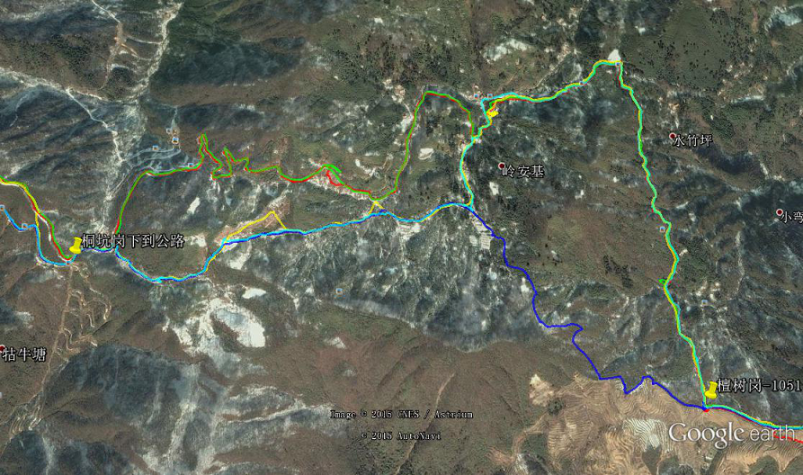

发信人: hemind(hooft), 信区: outdoor
标 题: 一日七尖拉练线路总结
发信站: 饮水思源 (2015年05月13日13:07:04 星期三)
一日七尖拉练轨迹和关键点文件
http://bbs.sjtu.edu.cn../htm/pics/1431494000226560.zip
1.常规线路大部分是非常宽敞的防火带，即使是箬竹林里，由于走的频繁，路也非常明显
。
screen.width - 200){this.width = screen.width - 200}">
2.千亩田营地下到景区公路后，上桐坑岗的路的入口本来是左手边的一道铁门（12年清明
就是走的铁门），但是这次被锁住了，围墙右侧的地方被走出来了一条道，可以从这里上
去。
3.从桐坑岗下到公路上后，去檀树岗路有很多种走法，路线长短不一，做地图时多收集几
条航迹，选择多一点。我们这次走的下图的绿色线路，稍长一点，要走1公里左右的公路。
 screen.width - 200){this.width = screen.width - 200}">
4.然后就是仰天坪下到告林林场之后的这段路了，我们这次为了绕开大高岭，选择了走告
林头林场营地这条线路（图中绿色线路），结果快回到山脊的某处路突然就没了，应该是
走得人较少，箬竹长起来找不到路了，就一直以蛙泳姿势搬开箬竹开路，好在不长的一段
路，用了半个小时左右回到山脊。12年的时候向导带我们从这穿密林一直到蓑衣塘，给我
一种非常难走的感觉。蓝色线路是常规线路，路应该是非常明显的。后来在google earth
上看到红色线路，也是防火带，可以避免密林。
screen.width - 200){this.width = screen.width - 200}">
--
※ 来源:·饮水思源 bbs.sjtu.edu.cn·[FROM: 58.196.144.15]
※ 修改:·hemind 于 2015年05月13日13:14:03 修改本文·[FROM: 58.196.144.15]
※ 修改:·hemind 于 2015年05月13日13:14:33 修改本文·[FROM: 58.196.144.15]
|